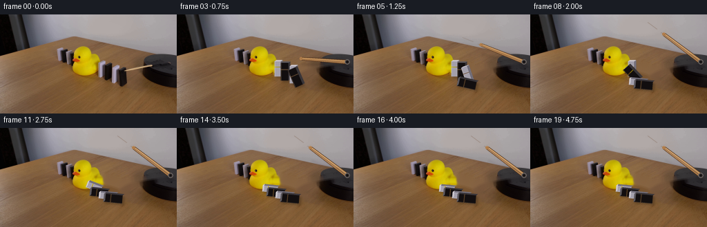
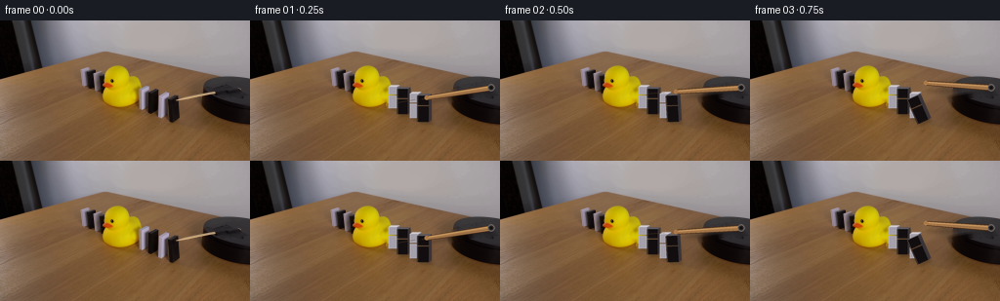

CODING AGENTS AS PIXEL WORLD MODELS
traex/GPT-5.6-Sol · 0057
点击播放 · 原生 RGB 像素
逐轮保存的候选
回放视频、检查图与代码变化。
每份候选均可单独播放。实际图片检查记录在下方工具轨迹中。
候选 01播放与检查图
点击播放 · 原生 RGB 像素


展开代码变化
--- 上一保存版本
+++ 本次保存版本
@@ -0,0 +1,230 @@
+"""Generate a locked-off tabletop domino demonstration from the supplied first frame.
+
+The scene plate comes exclusively from first_frame.png. Moving parts are reconstructed
+with small, antialiased shaded primitives so that the original camera, duck and table
+remain completely stationary.
+"""
+from pathlib import Path
+import math
+
+import cv2
+import numpy as np
+from PIL import Image, ImageDraw, ImageFilter
+
+import artifact_io
+
+CASE_DIR = Path(__file__).resolve().parent
+W, H = 256, 144
+SS = 4
+
+
+def poly_mask(mask, points, value=255):
+ cv2.fillPoly(mask, [np.rint(points).astype(np.int32)], value, lineType=cv2.LINE_AA)
+
+
+def make_clean_plate(src):
+ """Remove the original right-hand domino run and the wooden lever."""
+ removal = np.zeros((H, W), np.uint8)
+
+ # Four dominoes immediately to the right of the duck. Separate silhouettes
+ # deliberately cover their narrow cast shadows as well.
+ quads = [
+ [(138, 66), (154, 68), (155, 94), (137, 91)],
+ [(148, 68), (164, 72), (164, 98), (148, 95)],
+ [(162, 72), (176, 76), (176, 101), (162, 98)],
+ [(168, 75), (185, 79), (185, 102), (177, 107), (167, 101)],
+ ]
+ for q in quads:
+ poly_mask(removal, np.array(q))
+
+ # Initial lever, including its soft lower edge. Its right portion lies on the
+ # black mounting platform and its left portion lies over the tabletop.
+ poly_mask(removal, np.array([(177, 77), (249, 65), (252, 72), (181, 86)]))
+ removal = cv2.dilate(removal, np.ones((3, 3), np.uint8), iterations=1)
+ plate = cv2.inpaint(src, removal, 4, cv2.INPAINT_TELEA)
+
+ # Preserve every definitely visible yellow duck pixel. This also keeps its
+ # naturally photographed shading instead of replacing the duck procedurally.
+ hsv = cv2.cvtColor(src, cv2.COLOR_RGB2HSV)
+ yy, xx = np.mgrid[:H, :W]
+ duck_roi = (xx >= 102) & (xx <= 149) & (yy >= 43) & (yy <= 91)
+ saturated_yellow = (hsv[..., 0] >= 18) & (hsv[..., 0] <= 38) & (hsv[..., 1] > 150) & (src[..., 2] < 70)
+ dm = (duck_roi & saturated_yellow).astype(np.uint8) * 255
+ dm = cv2.morphologyEx(dm, cv2.MORPH_CLOSE, np.ones((5, 5), np.uint8))
+ dm = cv2.dilate(dm, np.ones((3, 3), np.uint8), iterations=1)
+ a = cv2.GaussianBlur(dm, (3, 3), .55).astype(np.float32)[..., None] / 255
+ plate = np.clip(src * a + plate * (1 - a), 0, 255).astype(np.uint8)
+
+ # A small portion of the duck's back was hidden by the nearest rear domino in
+ # frame zero. Reconstruct that smooth yellow rubber surface from adjacent rows.
+ repair = np.zeros((H, W), np.uint8)
+ cv2.ellipse(repair, (137, 77), (12, 11), 0, -65, 70, 255, -1, cv2.LINE_AA)
+ repair &= removal
+ # Do not extend beyond the plausible rounded silhouette.
+ repair[:, 149:] = 0
+ soft = cv2.GaussianBlur(repair, (5, 5), 1.0).astype(np.float32)[..., None] / 255
+ fill = plate.copy().astype(np.float32)
+ for y in range(61, 90):
+ sample = src[y, min(136, W - 1)].astype(np.float32)
+ # gently retain the rubber's top-to-bottom illumination
+ fill[y, :, :] = sample
+ plate = np.clip(fill * soft + plate * (1 - soft), 0, 255).astype(np.uint8)
+ return plate
+
+
+def sp(points):
+ return [(int(round(x * SS)), int(round(y * SS))) for x, y in points]
+
+
+def rgba_layer():
+ return Image.new("RGBA", (W * SS, H * SS), (0, 0, 0, 0))
+
+
+def composite(base, layer):
+ layer = layer.resize((W, H), Image.Resampling.LANCZOS)
+ rgba = np.asarray(layer).astype(np.float32)
+ a = rgba[..., 3:4] / 255.0
+ return np.clip(base.astype(np.float32) * (1 - a) + rgba[..., :3] * a, 0, 255).astype(np.uint8)
+
+
+def oriented_domino(pivot, height, width, tilt_deg):
+ """Front corners for a domino falling left, pivoted about its lower edge."""
+ a = math.radians(tilt_deg)
+ right = np.array([math.cos(a), -math.sin(a)])
+ up = np.array([-math.sin(a), -math.cos(a)])
+ p = np.asarray(pivot, np.float64)
+ bl = p - right * width / 2
+ br = p + right * width / 2
+ tl = bl + up * height
+ tr = br + up * height
+ return tl, tr, br, bl, right, up
+
+
+def draw_domino(draw, pivot, h, w, tilt, white=False, seed=0):
+ tl, tr, br, bl, right, up = oriented_domino(pivot, h, w, tilt)
+ # Apparent thickness points away from the lens and changes just slightly as
+ # the block rotates, preserving a believable little cuboid.
+ depth = np.array([2.5, -1.8]) + right * 0.25
+ if white:
+ front, side, top, edge = (164, 160, 172, 255), (112, 108, 120, 255), (201, 196, 203, 255), (220, 216, 221, 185)
+ else:
+ front, side, top, edge = (18, 14, 15, 255), (55, 51, 55, 255), (91, 87, 92, 255), (122, 117, 121, 105)
+
+ # Main face, narrow right face and top bevel.
+ draw.polygon(sp([tl, tr, br, bl]), fill=front)
+ draw.polygon(sp([tr, tr + depth, br + depth, br]), fill=side)
+ draw.polygon(sp([tl, tl + depth, tr + depth, tr]), fill=top)
+ draw.line(sp([tl + right * .45, bl + right * .45]), fill=edge, width=max(1, SS // 2))
+
+ # Low-contrast face variation prevents a computer-flat appearance.
+ mid1 = tl * .62 + bl * .38
+ mid2 = tr * .62 + br * .38
+ grain = (190, 186, 196, 28) if white else (105, 98, 101, 25)
+ draw.line(sp([mid1, mid2]), fill=grain, width=1 * SS)
+
+
+def smoothstep(x):
+ x = max(0.0, min(1.0, x))
+ return x * x * (3 - 2 * x)
+
+
+def domino_tilt(frame, start):
+ p = (frame - start) / 4.3
+ if p <= 0:
+ return 0.0
+ if p < 1:
+ return 84.5 * smoothstep(p)
+ # A tiny damped landing bounce: visible as physical settling, not jitter.
+ z = p - 1
+ return 84.5 - 2.0 * math.exp(-2.6 * z) * math.sin(z * math.pi * 2.2)
+
+
+def draw_shadows(frame, specs, lever_angle, lever_progress):
+ lay = rgba_layer()
+ d = ImageDraw.Draw(lay, "RGBA")
+ for pivot, h, w, tilt, white, seed in specs:
+ tl, tr, br, bl, right, up = oriented_domino(pivot, h, w, tilt)
+ # Shadows shorten as each domino becomes horizontal on the table.
+ sh = np.array([3.0, 2.2])
+ pts = [bl + sh, br + sh, tr + sh * .7, tl + sh * .7]
+ d.polygon(sp(pts), fill=(20, 11, 7, 53))
+
+ # Projection of the rising stick onto the table, increasingly diffuse/faint.
+ piv = np.array([247.0, 69.0])
+ a = math.radians(lever_angle)
+ tip = piv + 67 * np.array([math.cos(a), math.sin(a)])
+ projected_tip = tip + np.array([1.5, 4.0 + 15.0 * lever_progress])
+ alpha = int(42 * (1 - .70 * lever_progress))
+ d.line(sp([piv + (1, 3), projected_tip]), fill=(22, 11, 6, alpha), width=4 * SS)
+ lay = lay.filter(ImageFilter.GaussianBlur(1.25 * SS))
+ return lay
+
+
+def draw_objects(frame, specs, lever_angle, lever_progress):
+ lay = rgba_layer()
+ d = ImageDraw.Draw(lay, "RGBA")
+
+ # Draw from the rear of the diagonal line toward the camera.
+ for spec in specs:
+ draw_domino(d, *spec)
+
+ # The wooden lever is a subtly tapered, rounded stick anchored on the platform.
+ piv = np.array([247.0, 69.0])
+ a = math.radians(lever_angle)
+ axis = np.array([math.cos(a), math.sin(a)])
+ norm = np.array([-axis[1], axis[0]])
+ tip = piv + 67.0 * axis
+ half_tip, half_piv = 2.3, 3.15
+ outline = [tip + norm * half_tip, piv + norm * half_piv,
+ piv - norm * half_piv, tip - norm * half_tip]
+ inner = [tip + norm * 1.65, piv + norm * 2.35,
+ piv - norm * 2.35, tip - norm * 1.65]
+ d.polygon(sp(outline), fill=(82, 53, 31, 255))
+ d.polygon(sp(inner), fill=(177, 128, 78, 255))
+ # warm lit edge and two restrained grain streaks
+ d.line(sp([tip + norm * 1.15, piv + norm * 1.75]), fill=(224, 174, 113, 215), width=1 * SS)
+ d.line(sp([tip - norm * .55 + axis * 5, piv - norm * .75 - axis * 5]), fill=(116, 73, 42, 115), width=max(1, SS // 2))
+ d.line(sp([tip + axis * 12 - norm * .1, tip + axis * 29 - norm * .3]), fill=(103, 65, 37, 105), width=max(1, SS // 2))
+ # Rounded distal end and a dark metal-like pivot centre on the black platform.
+ r = half_tip
+ d.ellipse((int((tip[0]-r)*SS), int((tip[1]-r)*SS), int((tip[0]+r)*SS), int((tip[1]+r)*SS)), fill=(171, 121, 72, 255))
+ d.ellipse((int((piv[0]-3.7)*SS), int((piv[1]-3.7)*SS), int((piv[0]+3.7)*SS), int((piv[1]+3.7)*SS)), fill=(49, 44, 45, 255), outline=(114, 107, 103, 255), width=1*SS)
+ d.ellipse((int((piv[0]-1.35)*SS), int((piv[1]-1.35)*SS), int((piv[0]+1.35)*SS), int((piv[1]+1.35)*SS)), fill=(18, 15, 15, 255))
+ return lay
+
+
+def generate():
+ src = np.asarray(Image.open(CASE_DIR / "first_frame.png").convert("RGB"), dtype=np.uint8)
+ assert src.shape == (H, W, 3)
+ plate = make_clean_plate(src)
+ frames = [src.copy()] # contract: exact, unmodified first frame
+
+ # Rear to front along the perspective diagonal. Delayed starts create the
+ # expected impact wave from the stick toward the duck.
+ base_specs = [
+ ((146.0, 90.0), 22.0, 9.0, True, 3, 7.9),
+ ((156.0, 96.0), 26.0, 11.0, False, 2, 5.8),
+ ((168.0, 100.0), 25.0, 9.0, True, 1, 3.7),
+ ((177.0, 104.0), 27.0, 12.0, False, 0, 1.5),
+ ]
+
+ for f in range(1, 20):
+ # Clockwise rotation accelerates gently, then comes to a firm stop.
+ lever_progress = smoothstep(f / 8.0)
+ lever_angle = 169.0 + 48.0 * lever_progress
+ specs = []
+ for pivot, hh, ww, white, seed, start in base_specs:
+ specs.append((pivot, hh, ww, domino_tilt(f, start), white, seed))
+
+ out = plate.copy()
+ out = composite(out, draw_shadows(f, specs, lever_angle, lever_progress))
+ out = composite(out, draw_objects(f, specs, lever_angle, lever_progress))
+ frames.append(out)
+
+ result = np.stack(frames).astype(np.uint8)
+ assert np.array_equal(result[0], src)
+ artifact_io.save(result, CASE_DIR)
+
+
+if __name__ == "__main__":
+ generate()
可观测工具轨迹
实际执行的命令与返回图片。
命令 1exit 0
/bin/bash -lc "cat prompt.txt && printf '\\n---RULES---\\n' && cat GENERATION_RULES.md"
命令 2exit 127
/bin/bash -lc "find . -maxdepth 2 -type f -printf '%p\\n' | sort && file first_frame.png"
命令 3exit 0
/bin/bash -lc "python3 - <<'PY'
from PIL import Image
import numpy as np
im=np.asarray(Image.open('first_frame.png').convert('RGB'))
print(im.shape, im.dtype, im.min(), im.max())
# channel stats
for i,c in enumerate('RGB'): print(c, np.percentile(im[:,:,i],[0,1,5,25,50,75,95,99,100]), im[:,:,i].mean())
# coarse HSV category spatial bboxes/components
import cv2
hsv=cv2.cvtColor(im,cv2.COLOR_RGB2HSV)
classes={
'yellow':((15,80,80),(40,255,255)),
'black':((0,0,0),(180,255,65)),
'white':((0,0,180),(180,65,255)),
'wood':((3,35,55),(28,255,230)),
'red':((0,90,70),(10,255,255)),
}
for n,(lo,hi) in classes.items():
m=cv2.inRange(hsv,np.array(lo),np.array(hi))>0
ys,xs=np.where(m)
print(n, len(xs), (xs.min(),ys.min(),xs.max(),ys.max()) if len(xs) else None)
nlab,lab,stats,cen=cv2.connectedComponentsWithStats(m.astype('uint8'))
comps=[]
for j in range(1,nlab):
x,y,w,h,a=stats[j];
if a>=5: comps.append((a,x,y,w,h,tuple(np.round(cen[j],1))))
print(sorted(comps,reverse=True)[:15])
PY"命令 4exit 0
/bin/bash -lc "python3 - <<'PY'
import cv2,numpy as np
from PIL import Image
im=np.asarray(Image.open('first_frame.png').convert('RGB'))
# kmeans 12 color globally
z=im.reshape(-1,3).astype(np.float32)
crit=(cv2.TERM_CRITERIA_EPS+cv2.TERM_CRITERIA_MAX_ITER,100,.2)
_,lab,cen=cv2.kmeans(z,14,None,crit,10,cv2.KMEANS_PP_CENTERS)
cen=np.round(cen).astype(int)
# sort centers luminosity and label chars
order=np.argsort(cen.mean(1)); chars=' .,:;irsXA253hMG'
mp={int(o):chars[i] for i,o in enumerate(order)}
print([(mp[i],tuple(cen[i])) for i in range(len(cen))])
l=lab.reshape(144,256)
# mode each 4x4 -> 64x36
for y in range(0,144,4):
s=''
for x in range(0,256,4):
a=l[y:y+4,x:x+4].ravel(); v=np.bincount(a,minlength=14).argmax(); s+=mp[v]
print(s)
PY"命令 5exit 0
/bin/bash -lc "python3 - <<'PY'
import cv2, numpy as np
im=cv2.imread('first_frame.png')
g=cv2.cvtColor(im,cv2.COLOR_BGR2GRAY)
ed=cv2.Canny(g,40,100)
lines=cv2.HoughLinesP(ed,1,np.pi/180,threshold=15,minLineLength=8,maxLineGap=4)
for L in sorted(lines[:,0].tolist(), key=lambda p:(p[0]+p[2])/2):
x1,y1,x2,y2=L
if 35<max(y1,y2)<120: print(L)
# corners
cs=cv2.goodFeaturesToTrack(g,100,.03,4)
print('corners', sorted([tuple(np.round(x[0]).astype(int)) for x in cs],key=lambda p:(p[1],p[0])))
PY"命令 6exit 0
/bin/bash -lc "python3 - <<'PY'
from PIL import Image
import numpy as np
im=np.array(Image.open('first_frame.png').convert('RGB'))
def ch(p):
r,g,b=map(int,p); m=(r+g+b)/3
if r>145 and g>115 and b<55 and r>1.12*g:return 'Y'
if m<35:return '#'
if m<70:return 'd'
if max(r,g,b)-min(r,g,b)<28 and m>145:return 'W'
if max(r,g,b)-min(r,g,b)<38 and m>95:return 'g'
if r>g*1.25 and g>b*1.15:return 't'
return '.'
print(' '+''.join(str((x//10)%10) for x in range(80,201,2)))
print(' '+''.join(str(x%10//2) for x in range(80,201,2)))
for y in range(44,112,2):
s=''
for x in range(80,201,2):
# priority within 2x2
cs=[ch(p) for p in im[y:y+2,x:x+2].reshape(-1,3)]
s+=max(set(cs),key=lambda z:({'Y':6,'#':5,'W':4,'d':3,'t':2,'g':1,'.':0}[z],cs.count(z)))
print(f'{y:03} {s}')
PY"命令 7exit 0
/bin/bash -lc "python3 - <<'PY'
from PIL import Image
import numpy as np
im=np.asarray(Image.open('first_frame.png').convert('RGB'))
pts=[(42,47),(50,45),(60,42),(70,40),(80,37),(90,35),(100,33),(106,31),
(42,43),(50,41),(60,39),(70,36),(80,34),(90,31),(100,29),
(90,50),(92,55),(96,60),(102,60),(106,60),(110,60),(115,60),
(140,70),(146,75),(155,80),(168,84),(176,90)]
for x,y in pts: print((x,y),im[y,x].tolist())
# perpendicular profile x=70 y28..50
for x in [45,55,65,75,85,95,105]:
print('x',x,[(y,tuple(im[y,x])) for y in range(25,56,2)])
PY"命令 8exit 0
/bin/bash -lc "python3 - <<'PY'
from PIL import Image
import numpy as np,cv2
im=np.asarray(Image.open('first_frame.png').convert('RGB'))
# Row runs of dark under threshold 70
for y in range(0,110,2):
v=im[y].mean(1)<70
runs=[]; st=None
for x,q in enumerate(np.r_[v,False]):
if q and st is None:st=x
if not q and st is not None:
if x-st>=2:runs.append((st,x-1))
st=None
print(f'{y:03}',runs)
# characterize colors grid x0-110 / rows using brightness symbols average 2 px
chars=' .:-=+*#%@'
g=cv2.cvtColor(im,cv2.COLOR_RGB2GRAY)
print('brightness')
for y in range(0,76,2):
print(f'{y:02}', ''.join(chars[min(9,int(g[y:y+2,x:x+2].mean()/256*10))] for x in range(0,112,2)))
PY"命令 9exit 0
/bin/bash -lc "python3 - <<'PY'
from PIL import Image
import numpy as np
im=np.array(Image.open('first_frame.png').convert('RGB'))
for x in range(178,225,4):
yc=82-.2*(x-180)
print('\\nx',x,'yc',yc)
for y in range(int(yc)-6,int(yc)+8): print(y,tuple(im[y,x]),end='; ')
PY"命令 10exit 0
/bin/bash -lc 'cat artifact_io.py'
命令 11exit 0
/bin/bash -lc "python3 - <<'PY'
from PIL import Image
import numpy as np
im=np.asarray(Image.open('first_frame.png').convert('RGB'))
for x in [105,110,120,130,140,150,160,170,180,190,200,210,218]:
print('\\nx',x)
# compact y 20-75 every 2
for y in range(20,76,2):
p=im[y,x]; print(f'{y}:{p[0]:02x}{p[1]:02x}{p[2]:02x}',end=' ')
print()
PY"命令 12exit 0
/bin/bash -lc "cat > generate.py <<'PY'
\"\"\"Generate a locked-off tabletop domino demonstration from the supplied first frame.
The scene plate comes exclusively from first_frame.png. Moving parts are reconstructed
with small, antialiased shaded primitives so that the original camera, duck and table
remain completely stationary.
\"\"\"
from pathlib import Path
import math
import cv2
import numpy as np
from PIL import Image, ImageDraw, ImageFilter
import artifact_io
CASE_DIR = Path(__file__).resolve().parent
W, H = 256, 144
SS = 4
def poly_mask(mask, points, value=255):
cv2.fillPoly(mask, [np.rint(points).astype(np.int32)], value, lineType=cv2.LINE_AA)
def make_clean_plate(src):
\"\"\"Remove the original right-hand domino run and the wooden lever.\"\"\"
removal = np.zeros((H, W), np.uint8)
# Four dominoes immediately to the right of the duck. Separate silhouettes
# deliberately cover their narrow cast shadows as well.
quads = [
[(138, 66), (154, 68), (155, 94), (137, 91)],
[(148, 68), (164, 72), (164, 98), (148, 95)],
[(162, 72), (176, 76), (176, 101), (162, 98)],
[(168, 75), (185, 79), (185, 102), (177, 107), (167, 101)],
]
for q in quads:
poly_mask(removal, np.array(q))
# Initial lever, including its soft lower edge. Its right portion lies on the
# black mounting platform and its left portion lies over the tabletop.
poly_mask(removal, np.array([(177, 77), (249, 65), (252, 72), (181, 86)]))
removal = cv2.dilate(removal, np.ones((3, 3), np.uint8), iterations=1)
plate = cv2.inpaint(src, removal, 4, cv2.INPAINT_TELEA)
# Preserve every definitely visible yellow duck pixel. This also keeps its
# naturally photographed shading instead of replacing the duck procedurally.
hsv = cv2.cvtColor(src, cv2.COLOR_RGB2HSV)
yy, xx = np.mgrid[:H, :W]
duck_roi = (xx >= 102) & (xx <= 149) & (yy >= 43) & (yy <= 91)
saturated_yellow = (hsv[..., 0] >= 18) & (hsv[..., 0] <= 38) & (hsv[..., 1] > 150) & (src[..., 2] < 70)
dm = (duck_roi & saturated_yellow).astype(np.uint8) * 255
dm = cv2.morphologyEx(dm, cv2.MORPH_CLOSE, np.ones((5, 5), np.uint8))
dm = cv2.dilate(dm, np.ones((3, 3), np.uint8), iterations=1)
a = cv2.GaussianBlur(dm, (3, 3), .55).astype(np.float32)[..., None] / 255
plate = np.clip(src * a + plate * (1 - a), 0, 255).astype(np.uint8)
# A small portion of the duck's back was hidden by the nearest rear domino in
# frame zero. Reconstruct that smooth yellow rubber surface from adjacent rows.
repair = np.zeros((H, W), np.uint8)
cv2.ellipse(repair, (137, 77), (12, 11), 0, -65, 70, 255, -1, cv2.LINE_AA)
repair &= removal
# Do not extend beyond the plausible rounded silhouette.
repair[:, 149:] = 0
soft = cv2.GaussianBlur(repair, (5, 5), 1.0).astype(np.float32)[..., None] / 255
fill = plate.copy().astype(np.float32)
for y in range(61, 90):
sample = src[y, min(136, W - 1)].astype(np.float32)
# gently retain the rubber's top-to-bottom illumination
fill[y, :, :] = sample
plate = np.clip(fill * soft + plate * (1 - soft), 0, 255).astype(np.uint8)
return plate
def sp(points):
return [(int(round(x * SS)), int(round(y * SS))) for x, y in points]
def rgba_layer():
return Image.new(\"RGBA\", (W * SS, H * SS), (0, 0, 0, 0))
def composite(base, layer):
layer = layer.resize((W, H), Image.Resampling.LANCZOS)
rgba = np.asarray(layer).astype(np.float32)
a = rgba[..., 3:4] / 255.0
return np.clip(base.astype(np.float32) * (1 - a) + rgba[..., :3] * a, 0, 255).astype(np.uint8)
def oriented_domino(pivot, height, width, tilt_deg):
\"\"\"Front corners for a domino falling left, pivoted about its lower edge.\"\"\"
a = math.radians(tilt_deg)
right = np.array([math.cos(a), -math.sin(a)])
up = np.array([-math.sin(a), -math.cos(a)])
p = np.asarray(pivot, np.float64)
bl = p - right * width / 2
br = p + right * width / 2
tl = bl + up * height
tr = br + up * height
return tl, tr, br, bl, right, up
def draw_domino(draw, pivot, h, w, tilt, white=False, seed=0):
tl, tr, br, bl, right, up = oriented_domino(pivot, h, w, tilt)
# Apparent thickness points away from the lens and changes just slightly as
# the block rotates, preserving a believable little cuboid.
depth = np.array([2.5, -1.8]) + right * 0.25
if white:
front, side, top, edge = (164, 160, 172, 255), (112, 108, 120, 255), (201, 196, 203, 255), (220, 216, 221, 185)
else:
front, side, top, edge = (18, 14, 15, 255), (55, 51, 55, 255), (91, 87, 92, 255), (122, 117, 121, 105)
# Main face, narrow right face and top bevel.
draw.polygon(sp([tl, tr, br, bl]), fill=front)
draw.polygon(sp([tr, tr + depth, br + depth, br]), fill=side)
draw.polygon(sp([tl, tl + depth, tr + depth, tr]), fill=top)
draw.line(sp([tl + right * .45, bl + right * .45]), fill=edge, width=max(1, SS // 2))
# Low-contrast face variation prevents a computer-flat appearance.
mid1 = tl * .62 + bl * .38
mid2 = tr * .62 + br * .38
grain = (190, 186, 196, 28) if white else (105, 98, 101, 25)
draw.line(sp([mid1, mid2]), fill=grain, width=1 * SS)
def smoothstep(x):
x = max(0.0, min(1.0, x))
return x * x * (3 - 2 * x)
def domino_tilt(frame, start):
p = (frame - start) / 4.3
if p <= 0:
return 0.0
if p < 1:
return 84.5 * smoothstep(p)
# A tiny damped landing bounce: visible as physical settling, not jitter.
z = p - 1
return 84.5 - 2.0 * math.exp(-2.6 * z) * math.sin(z * math.pi * 2.2)
def draw_shadows(frame, specs, lever_angle, lever_progress):
lay = rgba_layer()
d = ImageDraw.Draw(lay, \"RGBA\")
for pivot, h, w, tilt, white, seed in specs:
tl, tr, br, bl, right, up = oriented_domino(pivot, h, w, tilt)
# Shadows shorten as each domino becomes horizontal on the table.
sh = np.array([3.0, 2.2])
pts = [bl + sh, br + sh, tr + sh * .7, tl + sh * .7]
d.polygon(sp(pts), fill=(20, 11, 7, 53))
# Projection of the rising stick onto the table, increasingly diffuse/faint.
piv = np.array([247.0, 69.0])
a = math.radians(lever_angle)
tip = piv + 67 * np.array([math.cos(a), math.sin(a)])
projected_tip = tip + np.array([1.5, 4.0 + 15.0 * lever_progress])
alpha = int(42 * (1 - .70 * lever_progress))
d.line(sp([piv + (1, 3), projected_tip]), fill=(22, 11, 6, alpha), width=4 * SS)
lay = lay.filter(ImageFilter.GaussianBlur(1.25 * SS))
return lay
def draw_objects(frame, specs, lever_angle, lever_progress):
lay = rgba_layer()
d = ImageDraw.Draw(lay, \"RGBA\")
# Draw from the rear of the diagonal line toward the camera.
for spec in specs:
draw_domino(d, *spec)
# The wooden lever is a subtly tapered, rounded stick anchored on the platform.
piv = np.array([247.0, 69.0])
a = math.radians(lever_angle)
axis = np.array([math.cos(a), math.sin(a)])
norm = np.array([-axis[1], axis[0]])
tip = piv + 67.0 * axis
half_tip, half_piv = 2.3, 3.15
outline = [tip + norm * half_tip, piv + norm * half_piv,
piv - norm * half_piv, tip - norm * half_tip]
inner = [tip + norm * 1.65, piv + norm * 2.35,
piv - norm * 2.35, tip - norm * 1.65]
d.polygon(sp(outline), fill=(82, 53, 31, 255))
d.polygon(sp(inner), fill=(177, 128, 78, 255))
# warm lit edge and two restrained grain streaks
d.line(sp([tip + norm * 1.15, piv + norm * 1.75]), fill=(224, 174, 113, 215), width=1 * SS)
d.line(sp([tip - norm * .55 + axis * 5, piv - norm * .75 - axis * 5]), fill=(116, 73, 42, 115), width=max(1, SS // 2))
d.line(sp([tip + axis * 12 - norm * .1, tip + axis * 29 - norm * .3]), fill=(103, 65, 37, 105), width=max(1, SS // 2))
# Rounded distal end and a dark metal-like pivot centre on the black platform.
r = half_tip
d.ellipse((int((tip[0]-r)*SS), int((tip[1]-r)*SS), int((tip[0]+r)*SS), int((tip[1]+r)*SS)), fill=(171, 121, 72, 255))
d.ellipse((int((piv[0]-3.7)*SS), int((piv[1]-3.7)*SS), int((piv[0]+3.7)*SS), int((piv[1]+3.7)*SS)), fill=(49, 44, 45, 255), outline=(114, 107, 103, 255), width=1*SS)
d.ellipse((int((piv[0]-1.35)*SS), int((piv[1]-1.35)*SS), int((piv[0]+1.35)*SS), int((piv[1]+1.35)*SS)), fill=(18, 15, 15, 255))
return lay
def generate():
src = np.asarray(Image.open(CASE_DIR / \"first_frame.png\").convert(\"RGB\"), dtype=np.uint8)
assert src.shape == (H, W, 3)
plate = make_clean_plate(src)
frames = [src.copy()] # contract: exact, unmodified first frame
# Rear to front along the perspective diagonal. Delayed starts create the
# expected impact wave from the stick toward the duck.
base_specs = [
((146.0, 90.0), 22.0, 9.0, True, 3, 7.9),
((156.0, 96.0), 26.0, 11.0, False, 2, 5.8),
((168.0, 100.0), 25.0, 9.0, True, 1, 3.7),
((177.0, 104.0), 27.0, 12.0, False, 0, 1.5),
]
for f in range(1, 20):
# Clockwise rotation accelerates gently, then comes to a firm stop.
lever_progress = smoothstep(f / 8.0)
lever_angle = 169.0 + 48.0 * lever_progress
specs = []
for pivot, hh, ww, white, seed, start in base_specs:
specs.append((pivot, hh, ww, domino_tilt(f, start), white, seed))
out = plate.copy()
out = composite(out, draw_shadows(f, specs, lever_angle, lever_progress))
out = composite(out, draw_objects(f, specs, lever_angle, lever_progress))
frames.append(out)
result = np.stack(frames).astype(np.uint8)
assert np.array_equal(result[0], src)
artifact_io.save(result, CASE_DIR)
if __name__ == \"__main__\":
generate()
PY
python3 generate.py
python3 - <<'PY'
import numpy as np
from PIL import Image
z=np.load('pixels.npz')['pixels']
print(z.shape,z.dtype)
for i in range(20):
a=np.array(Image.open(f'frames/{i:02d}.png'))
d=np.abs(a.astype(int)-np.array(Image.open('first_frame.png')).astype(int))
print(i, np.count_nonzero(np.any(d,2)), round(float(d.mean()),2), a.min(),a.max())
print('frame0 exact',np.array_equal(np.array(Image.open('frames/00.png')),np.array(Image.open('first_frame.png'))))
PY"命令 13exit 0
/bin/bash -lc "python3 - <<'PY'
from PIL import Image
import numpy as np
chars=' .,:;irsXA253hMG'
# brightness/category crop, frames showing cascade
for fi in [0,1,3,5,7,9,11,13,19]:
im=np.array(Image.open(f'frames/{fi:02}.png'))
print('\\nFRAME',fi)
# object category downsample crop x96:256 y44:112, each 4x4; dark # white W yellow Y wood / table .
for y in range(44,112,4):
s=''
for x in range(96,256,4):
a=im[y:y+4,x:x+4].reshape(-1,3).astype(int)
# med and occupancy category by dominant count
yy=(a[:,0]>150)&(a[:,1]>110)&(a[:,2]<55)
dk=a.mean(1)<62
wh=(a.max(1)-a.min(1)<35)&(a.mean(1)>145)
if yy.sum()>=4:s+='Y'
elif dk.sum()>=5:s+='#'
elif wh.sum()>=5:s+='W'
elif dk.sum()>=2:s+='d'
else:s+='.'
print(s)
PY"保存候选 1 份；完成命令 13 次；可验证图片返回 0 张。原始 API 响应与完整日志保留在本地。